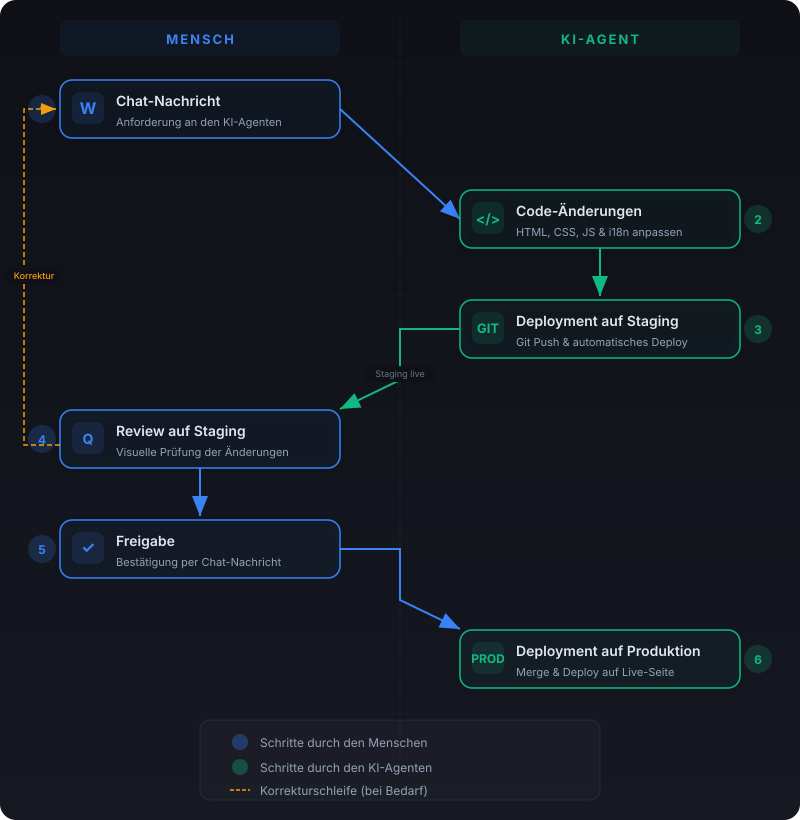
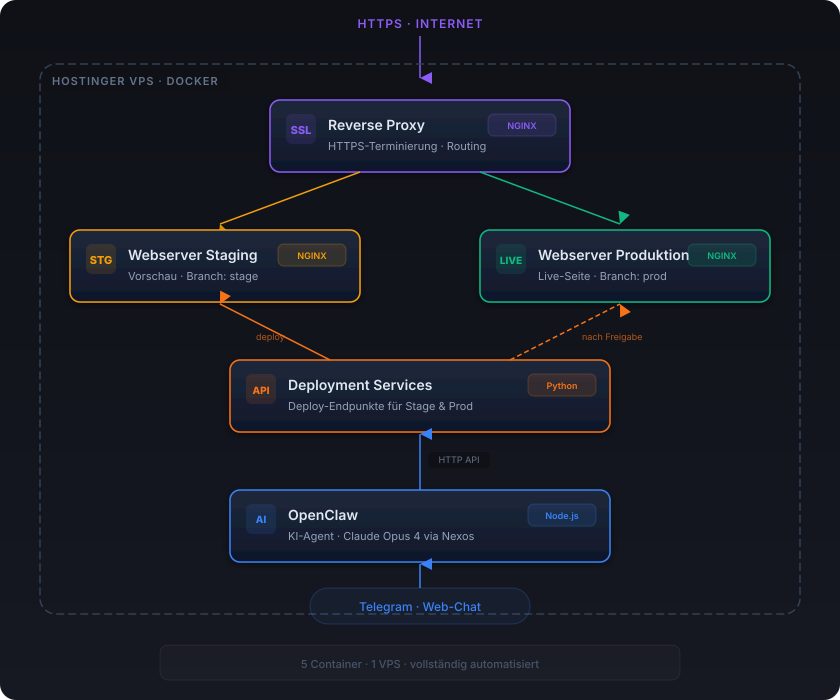
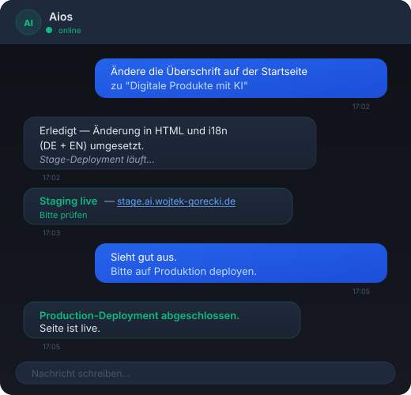

Wie diese Website entstanden ist
Eine statische Website, erstellt und betrieben durch einen KI-Agenten — vollständig per Chat gesteuert.
Was ist OpenClaw?
OpenClaw ist ein Open-Source-Framework, das KI-Modelle als persönliche Agenten einsetzt. Es läuft als Hintergrundprozess und kann über verschiedene Messaging-Kanäle (Telegram, WhatsApp, Signal, Discord, Web-Chat) gesteuert werden. Der Agent hat Zugriff auf Dateisystem, Shell, Browser und weitere Tools — und kann damit eigenständig Aufgaben ausführen.
In diesem Projekt läuft OpenClaw mit dem KI-Modell Claude Opus 4 von Anthropic. Das Modell wird dabei nicht direkt über Anthropic bezogen, sondern über Nexos — einen API-Provider, der verschiedene KI-Modelle über eine einheitliche Schnittstelle bereitstellt.
Wie funktioniert es?
Infrastruktur aufsetzen
Ein Hostinger VPS mit Docker-Container bildet die Grundlage. OpenClaw läuft innerhalb des Containers als dauerhafter Agent-Prozess.
Anforderungen per Chat
Über Telegram (oder den Web-Chat) werden Änderungswünsche direkt an den KI-Agenten übermittelt — in natürlicher Sprache, ohne Code schreiben zu müssen.
KI setzt um
Der Agent erstellt und bearbeitet HTML-, CSS- und JavaScript-Dateien, startet den Webserver und prüft das Ergebnis — alles eigenständig.
Review & Iteration
Das Ergebnis wird direkt im Browser geprüft. Korrekturen und Erweiterungen werden wieder per Chat-Nachricht in Auftrag gegeben.
Vom Chat zum Deployment
Diese Website wird über einen vollautomatisierten Workflow weiterentwickelt — ohne IDE, ohne lokalen Rechner. Eine Chat-Nachricht genügt, um Änderungen auf die Staging-Umgebung zu bringen, dort zu prüfen und nach Freigabe auf Production zu deployen.


Die technische Infrastruktur: Docker-Container, Git-Branches, Staging- und Production-Server.

So sieht der Workflow in der Praxis aus — eine einfache Chat-Konversation steuert den gesamten Prozess.
Eingesetzte Technologien
KI-Agent-Framework — steuert den gesamten Entwicklungsprozess
Large Language Model von Anthropic, bereitgestellt über den Nexos API-Provider
Containerisierung für isolierte und reproduzierbare Laufzeitumgebung
Virtual Private Server als Hosting-Infrastruktur
Leichtgewichtiger Webserver zum Ausliefern der statischen Seite
Statische Website mit responsivem Design, Mehrsprachigkeit und Formspree-Integration
E-Mail-Versand für das Kontaktformular ohne eigenes Backend
Messenger-Kanal zur Kommunikation mit dem KI-Agenten
Vorteile & Limitierungen
✅ Vorteile
- Schnelle Umsetzung — von der Idee zur fertigen Seite in Stunden statt Tagen
- Keine Entwicklerkenntnisse nötig — Steuerung in natürlicher Sprache
- Isolierte Umgebung — der Container schützt das Host-System
- Flexible Erreichbarkeit — Änderungen von überall per Messenger
- Niedrige Einstiegskosten — kein teures Entwickler-Team erforderlich
- Reproduzierbar — Container kann jederzeit neu aufgesetzt werden
⚠️ Limitierungen
- KI-Kontext ist begrenzt — bei sehr komplexen Projekten kann der Agent den Überblick verlieren
- Token-Kosten steigen mit Komplexität — längere Sessions verbrauchen mehr Budget
- Container-Neustart löscht Prozesse — der Webserver muss ggf. neu gestartet werden
- Kein persistenter Datenbank-Support im Container ohne zusätzliche Konfiguration
- Review nötig — KI-generierter Code sollte auf Qualität und Sicherheit geprüft werden
Kostenübersicht
Die laufenden Kosten beschränken sich auf das VPS-Hosting (7,99 €/Monat). Token-Kosten fallen nur bei aktiver Nutzung des KI-Agenten an — etwa bei Änderungen oder Erweiterungen der Website.
Steuerung per Messenger
Eine Besonderheit dieses Setups: Änderungen an der Website können direkt über Telegram oder den Web-Chat an den KI-Agenten geschickt werden. Der Agent empfängt die Nachricht, versteht die Anforderung und setzt sie um — alles in Echtzeit. Einfach eine Nachricht schreiben, den Rest erledigt der Agent.
Neugierig geworden?
Lassen Sie uns über Ihr Projekt sprechen — vielleicht ist ein KI-gestützter Ansatz auch für Sie der richtige Weg.
Jetzt Kontakt aufnehmen